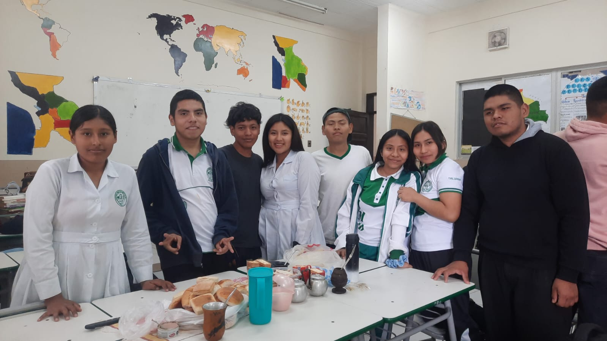

Celebración del Día del Libro en la Unidad Educativa Ismael Montes
Con una jornada especial dedicada a fomentar la lectura entre los estudiantes. Durante el día, se realizaron actividades que destacaron la importancia de la lectura y permitieron a los niños sumergirse en sus libros, fortaleciendo el hábito desde temprana edad.
Fecha: 06/09/2025
Editor: Saul Pedrazas
Día del Libro en la Unidad Educativa Ismael Montes Hoy, 6 de septiembre, se conmemoró el Día del Libro en la Unidad Educativa Ismael Montes. A diferencia de una jornada escolar común, este día se destacó por la dedicación de un tiempo especial para fomentar el hábito de la lectura entre los estudiantes. Desde primera hora, tanto docentes como alumnos se unieron a esta celebración llevando su libro preferido, aprovechando espacios dentro de la jornada escolar para leer y reflexionar sobre la importancia de la lectura en nuestra vida diaria.
Durante las clases, los profesores realizaron un reforzamiento del valor de la lectura, resaltando la importancia de la literatura en el desarrollo intelectual y emocional de los estudiantes. Además, se llevaron a cabo actividades de análisis y discusión sobre los textos, permitiendo que los niños reflexionaran y compartieran sus pensamientos sobre lo que estaban leyendo. Un momento destacable fue cuando los pequeños de la unidad educativa, en un ambiente de total concentración y entusiasmo, se sumergieron en sus libros, demostrando su interés por aprender y descubrir nuevas historias. Sin duda, este tipo de actividades contribuyen a fortalecer el amor por la lectura y a fomentar el pensamiento crítico desde una edad temprana.
Más noticias
Una mañana de convivecia
06/09/2025 - 11:35Dia del libro
06/09/2025 - 9:42